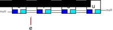

Llistes¶
Les llistes són seqüències de dades disposades de manera seqüencial.
Ja en coneixem de seqüències en Java. En concret els Strings són una seqüència de caràcters i els arrays ens permeten fer seqüències de qualsevol tipus, sigui primitiu o objecte.
De fet, els arrays són una manera força eficient d’implementar seqüències. Tenint-los disponibles potser ens preguntem per què podríem voler altres seqüències?
Deixa’m que et presenti part de la «família»:
![@startuml
interface Iterable {
iterator(): Iterator
}
Interface Collection extends Iterable {
add(element): boolean
addAll(colection): boolean
clear()
contains(element): boolean
get(int): element
isEmpty(): boolean
remove(element): boolean
size(): int
}
interface List extends Collection {
get(index: int): element
set(index: int, element)
}
class AbstractList implements List
abstract class AbstractCollection implements Collection
abstract class AbstractSequentialList
abstract class AbstractList extends AbstractCollection
class AbstractSequentialList extends AbstractList
class ArrayList extends AbstractList
class LinkedList extends AbstractSequentialList
class Vector extends AbstractList
class Stack extends Vector
interface List #orange
class ArrayList #orange
class LinkedList #orange
class Vector
class Stack
hide circle
hide empty members
skinparam classAttributeIconSize 0
skinparam class {
BackgroundColor White
BorderColor Black
ArrowColor Black
}
@enduml](_images/plantuml-c1780d4bf9d189bc66289044adacf3c80d59a8fc.png)
Jerarquia (parcial) de les Llistes en Java¶
Com pots veure, es tracta d’una jerarquia plena d’interfaces i classes
abstractes. No pateixis. De moment només farem cas a dues classes
ArrayList i LinkedList.
Les diferents interfaces defineixen les operacions mínimes que han d’oferir les classes que les implementin, mentre que les classes abstractes ofereixen un codi comú pels mètodes més generals, amb la intenció de simplificar la implementació de noves classes de llistes.
Els elements que més considerarem en aquest curs són List, ArrayList i
LinkedList.
El seu nom sencer és java.util.List, java.util.ArrayList i
java.util.LinkedList, però, per descomptat, podem fer servir
import per estalviar-nos java.util.
Genèrics¶
Les classes ArrayList i LinkedList ens ofereixen mètodes per
gestionar còmodament seqüències d’objectes d’un tipus concret.
Per exemple, si ens interessa declarar una seqüència de gats Renats, ho podem fer, entre d’altres, de les següents maneres:
ArrayList<GatRenat> renatsAmbArrayList = new ArrayList<GatRenat>();
LinkedList<GatRenat> renatsAmbLinkedList = new LinkedList<GatRenat>();
Fixa’t que el tipus de valors que contindrà la llista s’especifica entre
<>. Aquesta notació està relacionada amb el concepte de genèrics que
permet expressar no variables de valors sinó variables de tipus!
Així, si volem una llista de Strings farem ArrayList<String> i si és
de gats farem ArrayList<GatRenat>.
Un cop tenim declarat un ArrayList d’un tipus concret, Java se
n’encarregarà de vigilar que no hi fiquem dades que no toquen.
Considera la següent interacció al jshell:
1 2 3 4 5 6 7 8 9 10 11 12 13 14 | jshell> ArrayList<String> llistaStrings = new ArrayList<String>();
llistaStrings ==> []
jshell> llistaStrings.add("el primer text");
$3 ==> true
jshell> llistaStrings.add(new String("el segon text"));
$4 ==> true
jshell> llistaStrings.add(new Gat());
| Error:
| incompatible types: Gat cannot be converted to java.lang.String
| llistaStrings.add(new Gat());
| ^------------^
|
A la línia 1 creem un ArrayList de Strings. Les línies 4 i 7 mostren
com afegir un nou text a la llista. Sí, els ArrayList accepten nous
elements amb el mètode add().
El segon String que mirem d’afegir a la línia 7 està creat d’una manera poc habitual doncs és molt més compacte fer-ho directament com a la línia 4. En tot cas, el resultat és equivalent.
Ara, quan intentem afegir un gat a la línia 10, ens trobem que rebem
un error indicant-nos que no és possible convertir un Gat a un
String.
Per cert, el polimorfisme funciona aquí:
ArrayList<Gat> gats = new ArrayList<Gat>();
gats.add(new GatRenat()); // class GatRenat extends Gat
Genèrics i tipus primitius¶
Els genèrics tenen un problema:
jshell> ArrayList<int> llista;
| Error:
| unexpected type
| required: reference
| found: int
| ArrayList<int> llista;
| ^-^
El problema és que no podem fer servir tipus primitius, com ara int.
Potser pensaràs que no és cap problema perquè sempre podem fer servir els
clàssics arrays . Si se t’ha acudit és per que encara no saps tota la
feina que t’estalviaran classes com ArrayList.
Per sort, altres se’n van adonar abans que nosaltres i en van trobar solució: les classes embolcall o wrapper.
Ja les coneixem. Les que més hem usat en aquest curs serien:
primitiu |
embolcall |
int |
Integer |
char |
Character |
boolean |
Boolean |
float |
Float |
double |
Double |
Les instàncies de classes embolcall ocupen, intuïtivament, més memòria que els valors que embolcallen però és fàcil que Java tingui optimitzats alguns dels seus usos de la mateixa manera que és capaç de embolcallar i desembolcallar automàticament en molts contexts.
1 2 3 4 5 6 7 8 9 10 11 12 13 14 | jshell> Character ch = new Character('a');
ch ==> 'a'
jshell> Character ch = 'a'; //
ch ==> 'a'
jshell> ArrayList<Character> lletres = new ArrayList<Character>();
lletres ==> []
jshell> lletres.add(new Character('a'));
$1 ==> true
jshell> lletres.add('a');
$2 ==> true
|
A aquest procés d’embolcallar/desembolcallar, en Java se’l coneix com autoboxing/unboxing. Si en vols saber més, et proposo que facis una ullada a la documentació oficial
ArrayList i LinkedList són List¶
Les classes ArrayList i LinkedList són totes dues List. Això
vol dir que podem fer-les servir de manera polimòrfica.
List<GatRenat> renatsAmbArrayList = new ArrayList<GatRenat>();
List<GatRenat> renatsAmbLinkedList = new LinkedList<GatRenat>();
Això és molt convenient doncs, en general, ens permet fer servir les
funcionalitats de List sense tenir en compte quina és la implementació
concreta.
I quines funcionalitats són aquestes?
Fent una ullada ràpida a la
documentació de List
trobem que tota List ofereix, entre d’altres, els següents mètodes:
add(): permet afegir un element a la llista. Disposa de dues versions:una que rep només l’element i el col·loca al final
una altra que rep també la posició on ha d’inserir l’element
addAll(): permet afegir a la llista tots els elements d’una col·lecció (per exemple, una altraList). Com ambadd(), també ofereix la possibilitat d’indicar en quina posició volem inserir els nous elements.clear(): permet buidar la llistacontains(): ens permet saber si l’element que li passem per paràmetre es troba a la llista.get(int index): ens retorna l’element de la posicióindexa la llista. Ens generarà unaIndexOutOfBoundsExceptionsi l’índex que rep està fora de rang. Seria l’equivalent alString.charAt()per les llistes.isEmpty(): ens permet saber si la llista està buidaindexOf()ilastIndexOf(): donat un element, ens diu quina és la primera/darrera posició en que es troba a la llista. Ens retornarà-1si l’element no es troba i, per descomptat, si només hi ha una ocurrència de l’element, tots dos ens retornaran el mateix valor.remove(): ens permet eliminar un element de la llista. Hi ha dues versions segons l’argument que li passem a la crida:si li passem un
int, intentarà eliminar l’element de la posició indicada per l’argument.
Per recórrer una llista des de l’inici és habitual fer servir el for-enhanced, per exemple, si volem aixecar tots els gats d’una llista:
1 2 3 4 | List<Gat> gats = carregaGats();
for (Gat gat: gats) {
System.out.println(gat.aixecat());
}
|

ArrayList vs LinkedList¶
Hem vist que podem fer servir tant ArrayList com LinkedList per
implementar List. La pregunta és, si es poden fer servir iguals, és
que són iguals?
La resposta, evidentment, és que no. El fet de que puguem fer la majoria de les operacions amb l’una i amb l’altra, no vol dir que les dues ho facin internament de la mateixa manera.
De fet, algunes operacions són més eficients (tarden menys temps/ocupen menys espai) en una de les implementacions, i d’altres en l’altra. Això implica que cadascuna serà millor per un ús i no tan bona per un altre, tot i que totes dues poden fer la feina.
És quelcom similar a si disposem d’una serra i un ganivet. Amb tots dos podríem tallar fusta i pa, però si podem escollir, probablement preferirem un a l’altra per cada tasca, oi?
Internament, els ArrayList estan implementats amb un array. Això ens
permet que les operacions size(), isEmpty(), get() i set()
siguin molt ràpides, Altres operacions com ara add() o remove()
poden no ser tan ràpides, doncs requereixen fer espai
Per exemple, imagina que tenim un ArrayList de caràcters referenciat per lletres, amb els valors 'a',
'i', 'o' i 'u', i hi volem afegir 'e' a la posició 1.
L’operació seria: lletres.add(1, 'e');
Per poder afegir 'e' en aquesta posició, add() ha de fer-hi lloc.
Això ho aconsegueix copiant cada caràcter una posició cap a munt.
Finalment, copiarà el nou valor al forat que ha generat
Fixa’t que a add() li ha tocat copiar tots els valors a partir de la
posició 1 fins el final, una posició més. En cas que no hi hagués prou
espai, hauria hagut de crear un nou array més gran i copiar tots els
elements!
Per eliminar la 'e', el mètode remove() haurà de realitzar el camí
invers, és a dir, copiar tots els elements des de la posició 2 una posició
abans.
ArrayList disposa d’un índex que apunta al primer espai lliure al
final de l’array. Aquest índex coincideix amb el nombre d’elements que hi
ha a l’array.
La mida real de l’array, és a dir, l’espai que ocupa, sol ser més gran que el necessari per emmagatzemar tots els elements. Això permet que en afegir i eliminar no sempre calgui ampliar ni reduir l’array.
Com s’ho fa LinkedList?
La implementació de LinkedList és força diferent. Cada element està
guardat en un node. Els nodes són classes que tenen tres referències:
una referència al valor que guarda el node, una altra al node anterior i
una altra al node següent.
class Node {
private Object valor; // referència al valor
private Node seguent; // referència al següent node
private Node anterior; // referència al node anterior
}
Gràficament ho podem veure com:
Fixa’t com el node amb el valor 'a' té com a següent node el que conté
'i' però, donat que és el primer, el seu anterior és null. De manera molt similar, el darrer node que conté 'u' té com a anterior 'o' i com a següent null.
La classe LinkedList disposa també d’una referència al primer element
i una altra al darrer, de manera que per recórrer tots els elements de la
llista, ha de fer:
1 2 3 4 5 | Node actual = primer;
while (actual != null) {
System.out.println(actual.valor);
actual = actual.seguent;
}
|
Per inserir un nou element a una llista així, n’hi ha prou amb crear un
nou node i jugar amb els enllaços. Per exemple, per afegir 'e' entre
'a' i 'i' el mètode add() fa quelcom similar a:
1 2 3 4 5 6 | Node nodeAnterior = nodeA; // node de la posició anterior a on volem inserir
Node nodeE = new Node('e');
nodeE.anterior = nodeAnterior;
nodeE.seguent = nodeAnterior.seguent;
nodeAnterior.seguent = nodeE;
nodeE.seguent.anterior = nodeE;
|
Fixa’t que d’aquesta manera, no ens cal desplaçar els elements per poder
fer espai on inserir el nou. Només ens cal jugar amb les referències a
anterior i seguent dels nodes afectats.
En aquesta ocasió hem inserit el nou node després del primer. Si ens hagués calgut inserir-lo en una altra posició, simplement hauríem de trobar la posició anterior, per exemple, recorrent des de l’inici, i fer el mateix que
LinkedList ocupa més espai per cada element que ArrayList`, doncs
per cada element, a banda de la referència a l’eement li cal disposar de
dues referències a node pel node anterior i el node següent. A més, per
accedir a un element concret, li caldrà recórrer la llista per cercar-lo.
Per exemple, get(i) requereix recórrer els elements de la llista des
de l’inici o des del final (el que estigui més a prop de i) un per un,
comptant nodes fins arribar al cercat.
Si només has de fer recorreguts seqüencials, no és problema, però. A més,
si has de fer moltes insercions o eliminacions a l’inici de la llista i
aquesta és llarga, o fins i tot en qualsevol part de la llista si les
insercions i eliminacions són massives, probablement sigui una bona
decisió usar LinkedList en comptes d”ArrayList, doncs no li caldrà
redimensionar arrays ni desplaçar elements per fer lloc o eliminar forats.
A banda, aquestes classes presenten mètodes específics, a banda dels de
List. Fes una ullada a la documentació oficial si tens interès.
La decisió, per tant, dependrà de l’ús que pretenguis fer. Quan tinguis dubtes, potser et serà necessari fer proves d’ús per acabar-te de decidir.
Comparació de velocitat¶
Et proposo la següent comparació de velocitat que, si bé no està tenint en comptes molts factors (com ara optimitzacions o càrrega del sistema), sí ens ofereix una primera idea de proporcions:
1 2 3 4 5 6 7 8 9 10 11 12 13 14 15 16 17 18 19 20 21 22 23 24 25 26 27 28 29 30 31 32 33 34 35 36 37 38 39 40 41 42 43 44 45 46 47 | import java.util.List;
import java.util.ArrayList;
import java.util.LinkedList;
public class ComparaAdd {
private static final int LONGITUD = 100000;
private static long testAdd0(List<Integer> llista) {
long tempsInicial = System.nanoTime();
for (int i=0; i < LONGITUD; i++) {
llista.add(0, i);
}
return System.nanoTime() - tempsInicial;
}
private static long testAdd(List<Integer> llista) {
long tempsInicial = System.nanoTime();
for (int i=0; i < LONGITUD; i++) {
llista.add(0, i);
}
return System.nanoTime() - tempsInicial;
}
private static long testAddMig(List<Integer> llista) {
long tempsInicial = System.nanoTime();
for (int i=0; i < LONGITUD; i++) {
int mig = llista.size() / 2;
llista.add(mig, i);
}
return System.nanoTime() - tempsInicial;
}
public static void main(String[] args) {
System.out.println("Comparant l'eficiència de les llistes");
System.out.println();
System.out.println("Comparació quan inserim sempre a l'inici");
System.out.printf("test add(0, i) LinkedList: %10d%n", testAdd0(new LinkedList<Integer>()));
System.out.printf("test add(0, i) ArrayList: %10d%n", testAdd0(new ArrayList<Integer>()));
System.out.println();
System.out.println("Comparació quan inserim sempre al final");
System.out.printf("test add(i) LinkedList: %10d%n", testAdd(new LinkedList<Integer>()));
System.out.printf("test add(i) ArrayList: %10d%n", testAdd(new ArrayList<Integer>()));
System.out.println();
System.out.println("Comparació quan inserim sempre al mig");
System.out.printf("test add(mig, i) LinkedList: %10d%n", testAddMig(new LinkedList<Integer>()));
System.out.printf("test add(mig, i) ArrayList: %10d%n", testAddMig(new ArrayList<Integer>()));
System.out.println();
}
}
|
La seva execució a la màquina on estic redactant aquests continguts és:
$ java ComparaAdd
Comparant l'eficiència de les llistes
Comparació quan inserim sempre a l'inici
test add(0, i) LinkedList: 9659321
test add(0, i) ArrayList: 1113460283
Comparació quan inserim sempre al final
test add(i) LinkedList: 6486274
test add(i) ArrayList: 1100352378
Comparació quan inserim sempre al mig
test add(mig, i) LinkedList: 6642878096
test add(mig, i) ArrayList: 510959275
$ java ComparaAdd
Comparant l'eficiència de les llistes
Comparació quan inserim sempre a l'inici
test add(0, i) LinkedList: 10845883
test add(0, i) ArrayList: 1133710134
Comparació quan inserim sempre al final
test add(i) LinkedList: 6366567
test add(i) ArrayList: 1126549169
Comparació quan inserim sempre al mig
test add(mig, i) LinkedList: 6412141972
test add(mig, i) ArrayList: 518203184
$ java ComparaAdd
Comparant l'eficiència de les llistes
Comparació quan inserim sempre a l'inici
test add(0, i) LinkedList: 7404651
test add(0, i) ArrayList: 1108997309
Comparació quan inserim sempre al final
test add(i) LinkedList: 6211758
test add(i) ArrayList: 1066951055
Comparació quan inserim sempre al mig
test add(mig, i) LinkedList: 6100036698
test add(mig, i) ArrayList: 516655896
En les tres execucions que he realitzat, calculant valors mitjos en les tres execucions, trobem què:
prova |
linkedList |
ArrayList |
resultat |
inici |
9303285 |
1118722575 |
LinkedList resulta 120 vegades més ràpid que ArrayList |
final |
6354866 |
1097950867 |
LinkedList resulta 173 vegades més ràpid que ArrayList |
mig |
6385018922 |
515272785 |
ArrayList resulta 12 vegades més ràpid que LinkedList |
En quant a insercions, tant a l’inici com al final, sembla que guanya sempre
LinkedList amb molta comoditat. En canvi, per inserir al mig la cosa canvia
i ArrayList resulta 12 vegades més ràpid.

{kind=link}
{kind=link}
{kind=link}
{kind=link}
{kind=link}
{kind=link}
{kind=link}